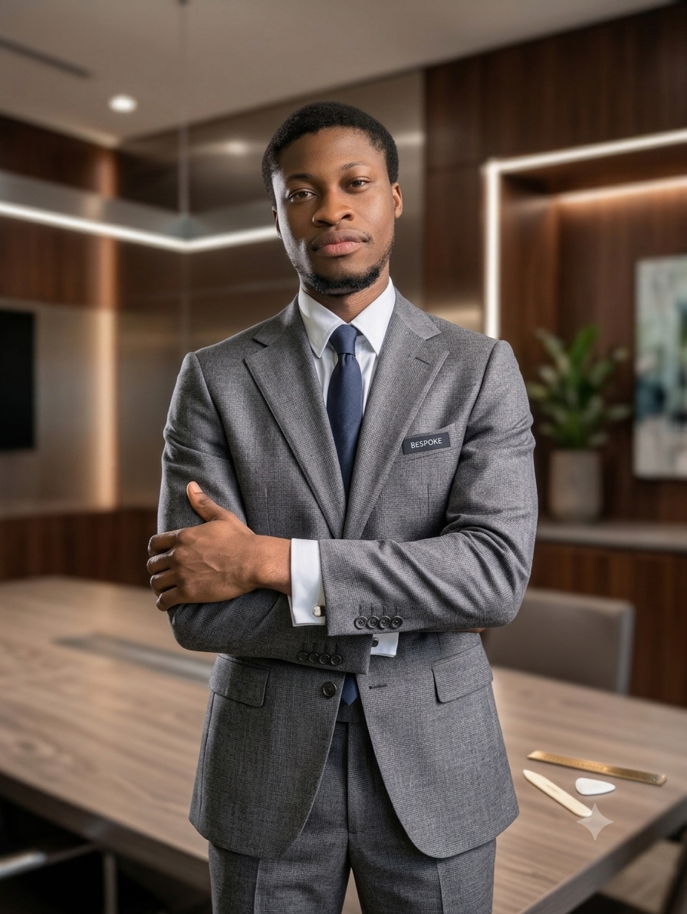

Lyster GUEDOU
Ingénieur R&D en mécatronique, systèmes embarqués et robotique intelligente
Je travaille sur des systèmes qui mêlent mécanique, électronique, logiciel embarqué et automatisation. Mon objectif est simple : concevoir des solutions utiles, robustes et proches des besoins industriels.